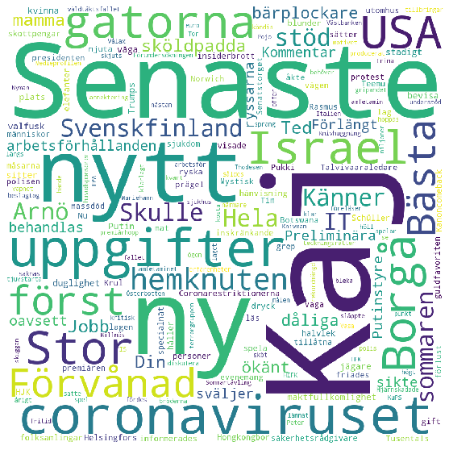

Ordmoln¶
[1]:
import pandas as pd
nyheter = pd.read_csv('https://kodanka.fi/nyheter.csv')
nyhetsrubriker = nyheter['Rubrik']
print(nyhetsrubriker.head())
0 Ted & Kaj: Din mamma var en sköldpadda
1 Senaste nytt om coronaviruset
2 Jobb som bärplockare är ökänt för dåliga arbet...
3 Preliminära uppgifter: Förlängt Putinstyre i s...
4 Kommentar: Så länge ryssarna sväljer maktfullk...
Name: Rubrik, dtype: object
[2]:
stoppord = pd.read_csv('https://kodanka.fi/stoppord.txt', squeeze=True)
print(stoppord.head())
0 adertonde
1 adjö
2 aldrig
3 alla
4 allas
Name: aderton, dtype: object
[3]:
from wordcloud import WordCloud
ordmoln = WordCloud(stopwords=set(stoppord),
width=1000,
height=1000,
background_color='white')
[4]:
ordmoln = ordmoln.generate((' ').join(nyhetsrubriker))
[5]:
import matplotlib.pyplot as plt
plt.figure(figsize=(10, 10))
plt.imshow(ordmoln)
plt.axis('off')
plt.show()

[6]:
import requests
from io import BytesIO
from PIL import Image
png = requests.get('https://kodanka.fi/skugga.png')
skugga = Image.open(BytesIO(png.content))
[7]:
import numpy as np
mask = np.array(skugga)
print(mask[0])
[[255 255 255 255]
[255 255 255 255]
[255 255 255 255]
...
[255 255 255 255]
[255 255 255 255]
[255 255 255 255]]
[8]:
ordmoln = WordCloud(stopwords=set(stoppord),
width=1000,
height=1000,
background_color=None,
mode='RGBA',
mask=mask)
[9]:
ordmoln = ordmoln.generate((' ').join(nyhetsrubriker))
plt.figure(figsize=(10, 10))
plt.imshow(ordmoln)
plt.axis('off')
plt.show()

import pandas as pd
import numpy as np
import requests
from io import BytesIO
from PIL import Image
from wordcloud import WordCloud
import matplotlib.pyplot as plt
nyheter = pd.read_csv('https://kodanka.fi/nyheter.csv')
nyhetsrubriker = nyheter['Rubrik']
stoppord = pd.read_csv('https://kodanka.fi/stoppord.txt', squeeze=True)
png = requests.get('https://kodanka.fi/skugga.png')
skugga = Image.open(BytesIO(png.content))
mask = np.array(skugga)
ordmoln = WordCloud(stopwords=set(stoppord),
width=1000,
height=1000,
background_color=None,
mode='RGBA',
mask=mask)
ordmoln = ordmoln.generate((' ').join(nyhetsrubriker))
plt.figure(figsize=(10, 10))
plt.imshow(ordmoln)
plt.axis('off')
plt.show()